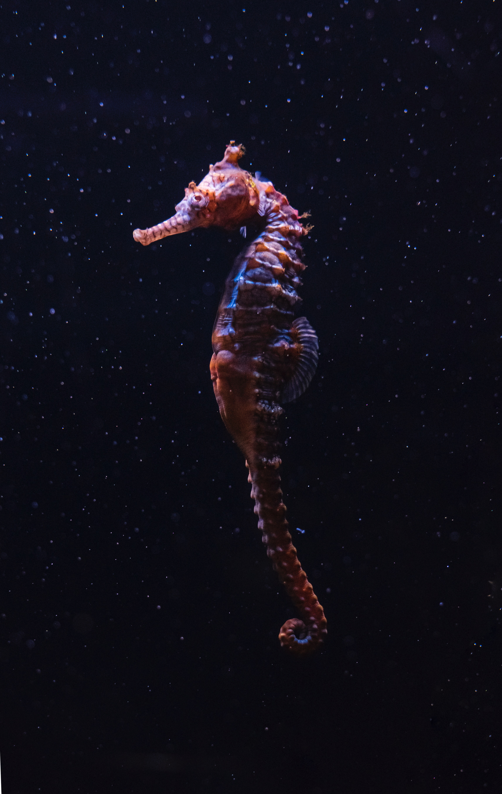

-
Cavalo Marinho

O corpo do cavalo-marinho é pequeno e bastante resistente, formado por uma série de anéis ósseos,
e mede em torno de 15 cm a 18 cm. Esses peixes apresentam nadadeiras, que permitem sua natação,
e são ativos durante o dia,
apesar de sua pequena mobilidade.
-
Baleia Azul

A baleia-azul é um animal que desperta grande fascínio,
principalmente por suas dimensões corporais,
sendo o maior animal do planeta. O maior espécime capturado media cerca de 33 metros e pesava 190 toneladas. A seguir.
-
Tartaruga Marinha

As tartarugas marinhas
são répteis que apresentam carapaça e membros
que se assemelham a nadadeiras,
além de serem capazes de ficar grandes períodos de tempo submersas.
.